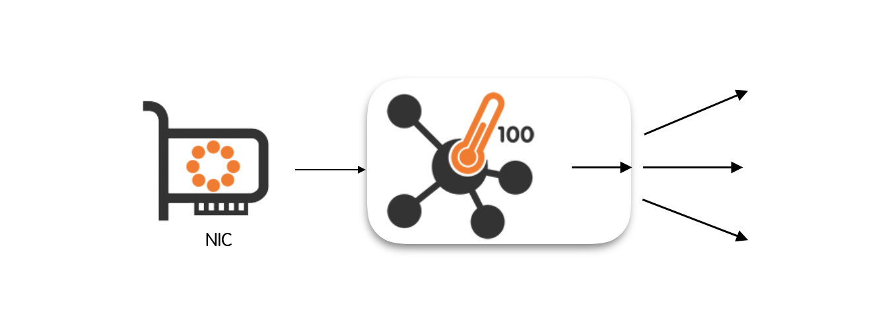
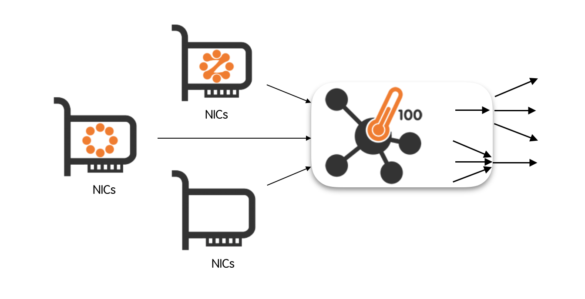
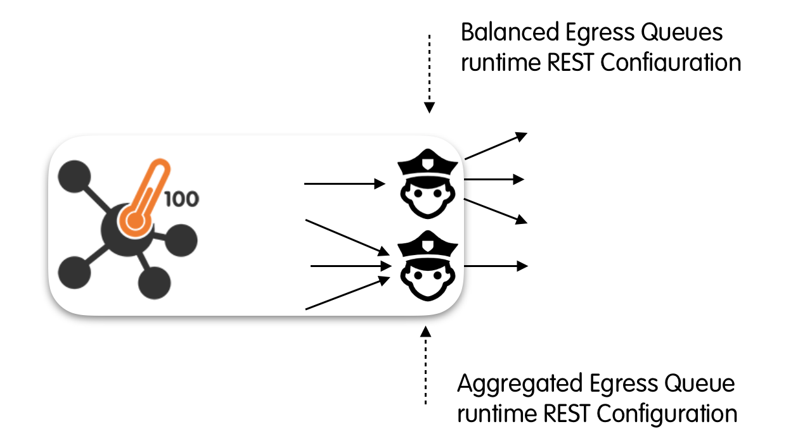

Выходные очереди
Как уже было представлено в разделе «Случаи использования», nProbe™ Cento реализует (в двоичном формате cento-ids) функции перенаправления трафика, которые позволяют:
Перехватывайте пакеты из нескольких входных интерфейсов и пересылайте их в единую агрегированную выходную очередь.

Захватывайте пакеты из входного интерфейса и пересылайте их в несколько сбалансированных выходных очередей.


Перехватывайте пакеты из одного или нескольких входных интерфейсов и одновременно пересылайте их в несколько сбалансированных очередей и в одну агрегированную очередь.


Говорят, что выходная очередь агрегируется, когда она содержит пакеты, поступающие от нескольких входных интерфейсов. И наоборот, его называют сбалансированным, если он несет подмножество пакетов, исходящих из входного интерфейса.
Часто простого перенаправления пакетов недостаточно, поскольку может потребоваться некоторая гибкость для политики трафика, проходящего через выходные очереди. Например, если выходная очередь используется устройством записи пакетов, можно сэкономить ценное пространство, избегая записи полезных данных зашифрованного трафика. Аналогичным образом, когда сбалансированные выходные очереди отправляются в IDS/IPS, можно снизить нагрузку на процессоры, отбрасывая зашифрованные пакеты.
Контроль трафика исходящих очередей
Как агрегированные, так и сбалансированные исходящие очереди позволяют детально контролировать трафик с помощью набора иерархических правил. Правила передаются с использованием текстового файла во время запуска nProbe™ Cento или динамически через REST API. nProbe™ Cento можно дать указание перечитать текстовый файл правил, отправив процессу SIGHUP (например, kill -SIGHUP <идентификатор процесса>). Это может быть полезно, например, для обновления политик без остановки и перезапуска процесса.
Правила могут применяться на трех разных уровнях, а именно:
На уровне очереди;
На уровне подсети;
На уровне протокола приложения.
Правила протокола приложения имеют приоритет над правилами уровня подсети, которые, в свою очередь, имеют приоритет над правилами уровня очереди. Правила уровня очереди можно рассматривать как правила очереди «по умолчанию».
Правила политики
Как уже говорилось выше, политика может применяться на трех разных уровнях с помощью правил. Типов правил пять, а именно:
Переслать: переслать пакет;
Discard: не пересылать пакет;
Шунт: пересылка первых K пакетов в каждом потоке, где K — настраиваемая константа;
Slice-l4: обрезать пакет после уровня IP;
Slice-l3: вырезать пакет после слоя TCP/UDP.
Очередь/интерфейс назначения: перенаправить пакет в определенную очередь или выходной интерфейс (только сбалансированный выходной интерфейс).
Пересылка означает, что трафик должен доставляться в очередь вывода как есть, без отбрасывания или изменения. Discard означает, что трафик не перенаправляется в выходную очередь. Шунт означает, что в выходную очередь пересылаются только первые K пакетов каждого потока. Значение K настраивается и может быть установлено пользователем. Slice-l4 (slice-l3) означает, что пакет пересылается только до заголовков уровня 4 (layer-3). Любая полезная нагрузка уровня 4 (уровня-3) отбрасывается.
Правила выражаются как <полицейский объект> = <политика>. Например, тот, кто хочет шунтировать весь исходящий трафик, будет использовать правило
default = shunt
Предполагая, что исключение необходимо для отмены правила по умолчанию и записи всего трафика, который исходит (назначается) из подсети 10.0.0.0/8, будет использоваться дополнительное правило.
10.0.0.0/8 = forward
Предположим, что необходимо еще одно исключение для отказа как от правила по умолчанию, так и от правила, установленного в подсети, чтобы всегда отбрасывать трафик SSH, добавим третье правило как
SSH = discard
Если определенный протокол прикладного приложения должен быть перенаправлен в одну из очередей или сетевых интерфейсов, настроенных в сбалансированной исходящей конфигурации (это должен быть один из интерфейсов, перечисленных в --balanced-egress-queues), индекс очереди назначения или выходной интерфейс можно настроить, как показано ниже.
DNS = eth1
Обратите внимание, что список протоколов DPI, поддерживаемых cento, можно распечатать с помощью:
cento --print-ndpi-protocols
Файл конфигурации выходных очередей
Правила указываются в текстовом файле, соответствующем стандарту INI. INI — это очень простой стандарт, определяющий формат файла конфигурации. Файл конфигурации разделен на разделы. Каждый раздел начинается с «метки», заключенной в квадратные скобки, например, [egress.aggregated]. Каждая строка, содержащаяся после метки, относится к разделу. Раздел неявно заканчивается, когда начинается новый раздел.
nProbe™ Файлы конфигурации Cento содержат в квадратных скобках разделы, соответствующие различным уровням иерархии как для агрегированных, так и для сбалансированных выходных очередей. Каждый раздел содержит правила, которые необходимо применять. Присутствует дополнительный раздел для настройки шунтирования. Исчерпывающий пример файла конфигурации приведен ниже.
[egress.aggregated]
default = shunt
banned-hosts = discard
[egress.aggregated.subnet]
10.0.0.1/32 = forward
10.10.10/24 = forward
[egress.aggregated.protocol]
HTTP = forward
SSL = slice-l4
SSH = slice-l4
[egress.balanced]
default = forward
banned-hosts = discard
[egress.balanced.subnet]
192.168.2/24 = discard
[egress.balanced.protocol]
SSL = discard
SSH = discard
DNS = eth1
[shunt]
default = 10
tcp = 12
udp = 2
HTTP = 40
SSL = 5
В оставшейся части этого раздела дано описание разделов конфигурационного файла.
Шунтирование
Раздел [shunt] файла конфигурации позволяет указать количество пакетов для каждого потока, которые должны пройти через любую выходную очередь. Этот раздел является глобальным и применяется как к агрегированным, так и к сбалансированным очередям. Количество пакетов по умолчанию — 10, и его можно изменить с помощью правила:
default = 10
Приведенное выше правило устанавливает максимальное количество пакетов на поток, пересылаемых в выходные очереди, равным 10. Также можно установить ограничения для максимального количества пакетов, которые должны пройти через любой поток tcp (например, tcp = 12) или udp (например, udp = 2). Аналогично, максимальное количество пакетов можно настроить для каждого протокола приложения. Например, чтобы установить максимальное количество пакетов, которые могут пройти через поток HTTP, равное 40, можно использовать следующую строку
HTTP = 40
Правилом последней инстанции является значение по умолчанию, то есть любой поток, который не соответствует ни одному из других правил, шунтируется с использованием значения по умолчанию. Правила протокола приложения «отменяют» правила уровня 4, то есть поток HTTP, транспортируемый через tcp, пересылается до 40-го пакета, если рассматривать приведенные выше примеры.
Все зарезервированные ключевые слова (помимо протоколов nDPI):
по умолчанию
tcp
udp
Объединенная выходная очередь
Агрегированные выходные очереди настраиваются с помощью трех разделов: [egress.aggregated], [egress.aggregated.subnet] и [egress.aggregated.protocol]. Правила указаны в каждом разделе, по одному в строке.
[egress.aggregated.protocol] содержит правила пересылки протокола приложения, которые необходимо соблюдать. Любой протокол приложения выражается с помощью строки. Полный список доступных протоколов приложений можно просмотреть, просто запустив встроенную справку nProbe™ Cento.
cento --print-ndpi-protocols
Любая строка в этом разделе имеет формат <имя протокола> = <политика>, где политика может быть любой: пересылка, отбрасывание, шунтирование, срез-l4 и срез-l3.
Примером является
[egress.aggregated.protocol]
HTTP = forward
SSL = slice-l4
SSH = slice-l4
[egress.aggregated.subnet] содержит правила переадресации, которые применяются на уровне подсети. Каждая строка в этом разделе имеет формат <CIDR подсеть> = <политика>. Подсети выражаются с использованием общепринятой нотации CIDR <адрес>/<сетевая маска>. Политика может быть любой из следующих: пересылка, отбрасывание, шунтирование, срез-14 и срез-13.
Примером является
[egress.aggregated.subnet]
10.0.0.1/32 = forward
10.10.10/24 = forward
Если поток соответствует как правилу уровня подсети, так и правилу уровня протокола, то применяется правило уровня протокола.
[egress.aggregated] содержит политики исходящей очереди «по умолчанию», то есть любой поток, который не соответствует ни одному правилу, указанному в разделах подсети и протокола, будет контролироваться с использованием правил «по умолчанию». Этот раздел содержит не более двух строк: одну для политики по умолчанию, а другую для политики, которая должна применяться к запрещенным хостам. Мы отсылаем читателя к разделу «Параметры командной строки» для подробного описания запрещенных хостов.
Примером является
[egress.aggregated]
default = shunt
banned-hosts = discard
В приведенном выше примере все потоки, которые не контролируются правилами на уровне подсети или протокола, шунтируются, как указано в правиле по умолчанию. Если хост входит в список запрещенных хостов, то весь трафик отбрасывается.
Сбалансированные исходящие очереди
Сбалансированные исходящие очереди настраиваются точно так же, как описано в разделе выше для агрегированных исходящих очередей. Единственное отличие заключается в трех названиях разделов:
[egress.balanced]
[egress.balanced.subnet]
[egress.balanced.protocol]
Поэтому мы отсылаем читателя к предыдущему разделу за подробным описанием настройки очередей.
Среда выполнения выходных очередей REST Конфигурация API
nProbe™ Cento был разработан, чтобы обеспечить динамическую настройку выходных очередей с помощью REST API. Одной из основных причин выбора конфигурации открытых очередей через API является обеспечение канала обратной связи, который может использоваться, например, IDS/IPS, например Suricata или Snort. Действительно, крайне важно предоставить IDS/IPS возможность быстрого управления трафиком на основе решений, принимаемых во время выполнения. Благодаря этому API IDS/IPS получает возможность, например, заблокировать хост, который только что был помечен как вредоносный. Аналогично, он может использовать API, чтобы дать команду nProbe™ Cento начать отправку трафика подозрительной подсети на устройство записи трафика.


Это API, обеспечивающее тот же уровень гибкости, которого можно достичь за счет файл конфигурации. Действительно, API можно использовать для установки правил политики на любом из три различных уровня, подробно рассмотренные выше, а именно: очередь, подсети и уровня протокола. Отсылаем заинтересованного читателя к «Правилам политики». раздел выше для подробного описания этих правил.
Пожалуйста, обратитесь к API Документация раздел для полной спецификации API.